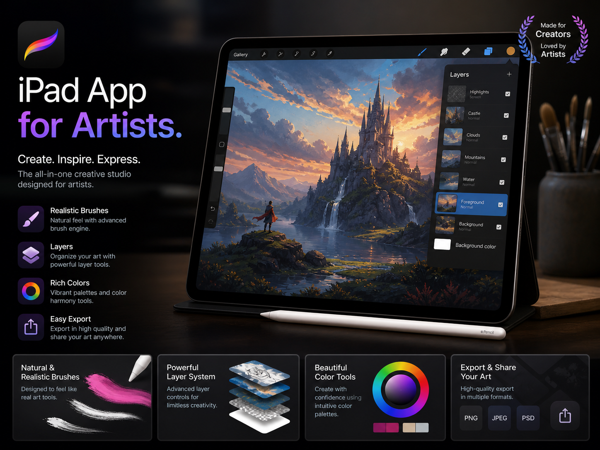

iPad App
for the Artists
Project Overview
Proyek ini berfokus pada pengembangan aplikasi iPad untuk seniman digital yang membutuhkan ruang kerja kreatif, ringan, dan mudah digunakan. Tujuan utama aplikasi adalah membantu seniman membuat sketsa, mengatur referensi visual, dan menyusun proses kreatif dalam satu platform yang praktis.
Research & Discovery
Proses riset dilakukan untuk memahami kebutuhan seniman dalam bekerja secara digital, meliputi:
- Wawancara dengan ilustrator, desainer karakter, dan seniman konsep
- Observasi alur kerja saat membuat sketsa, pewarnaan, dan revisi karya
- Analisis aplikasi kreatif populer untuk menemukan peluang penyederhanaan fitur
- Pengujian awal untuk memahami kebiasaan pengguna iPad dan stylus
Interface Design Strategy
Strategi desain antarmuka dibuat agar pengalaman menggambar terasa fokus dan tidak mengganggu proses kreatif. Fokus utama desain meliputi:
- Toolbar sederhana yang mudah dijangkau saat menggunakan stylus
- Mode kanvas penuh untuk memberi ruang visual yang luas
- Sistem layer dan palet warna yang jelas namun tetap ringkas
- Pengaturan proyek untuk menyimpan referensi, draft, dan hasil akhir
Key Outcomes
Hasil utama dari pengembangan konsep aplikasi ini adalah:
- Alur membuat sketsa menjadi lebih cepat dan terorganisir
- Pengguna lebih mudah berpindah antara referensi, layer, dan kanvas
- Tampilan aplikasi terasa bersih sehingga seniman dapat fokus pada karya
- Prototype mendapatkan respons positif dari pengguna kreatif saat pengujian
Project Gallery